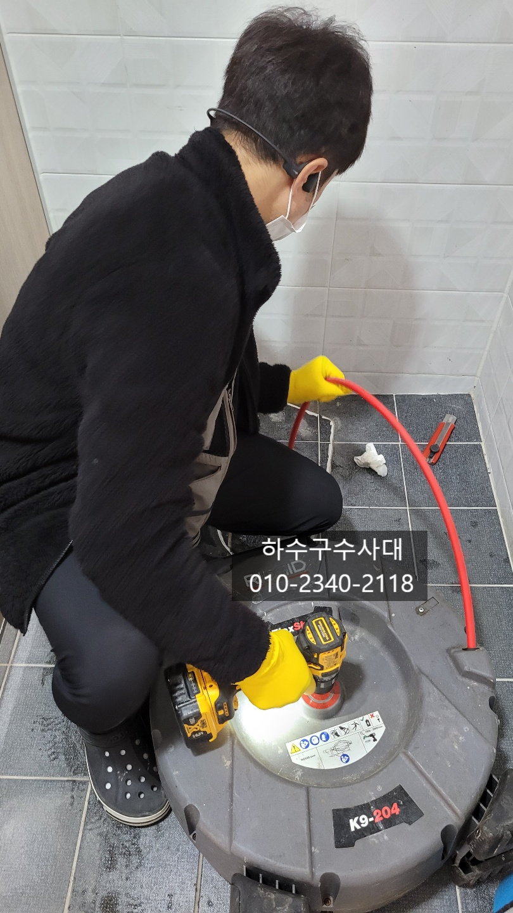
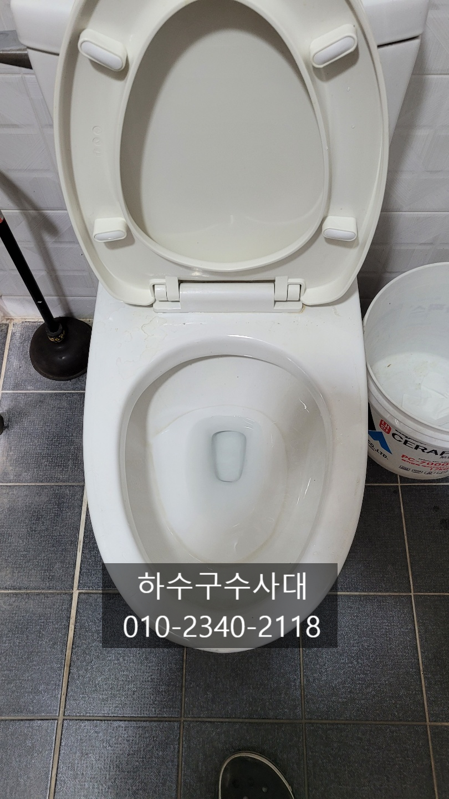
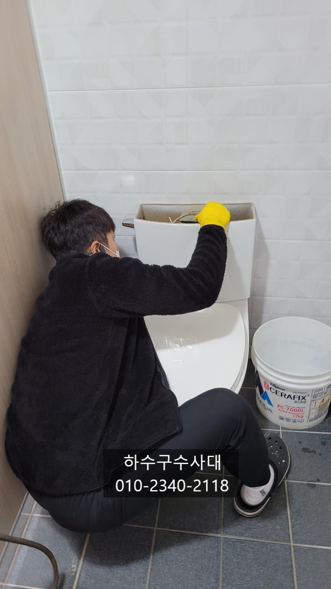
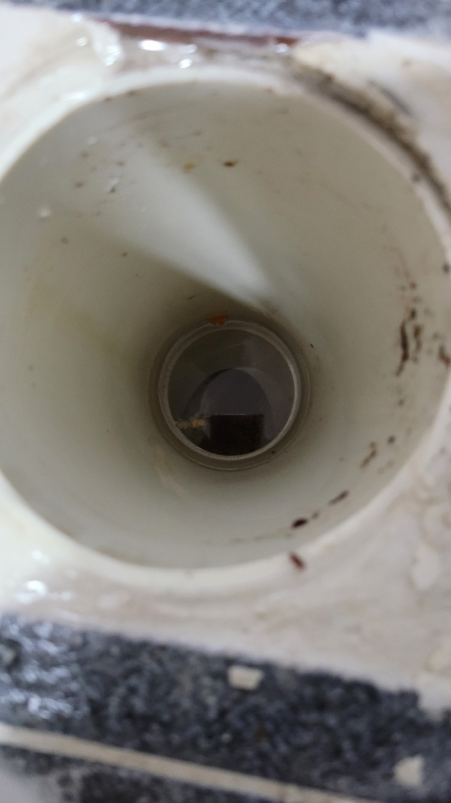
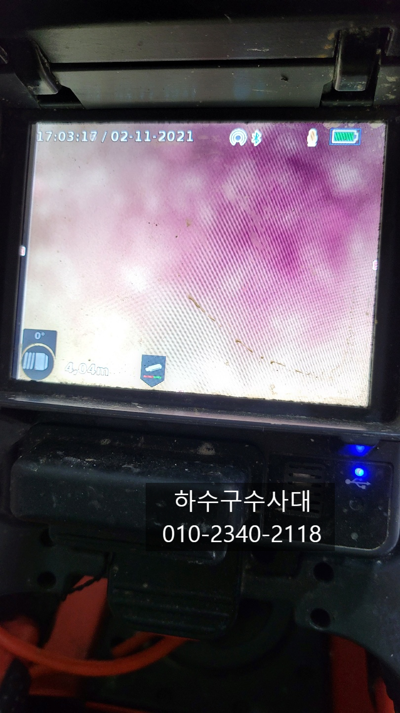
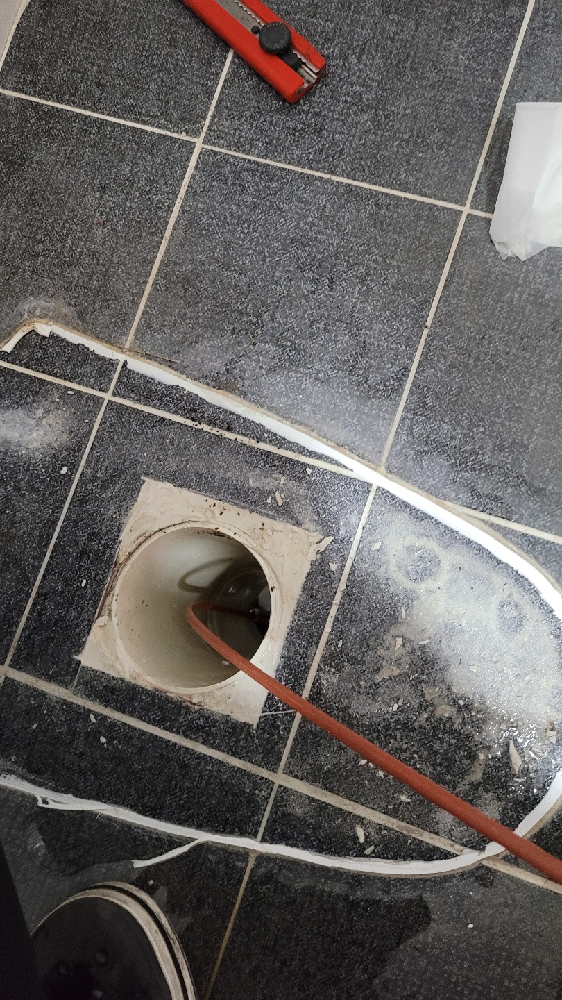
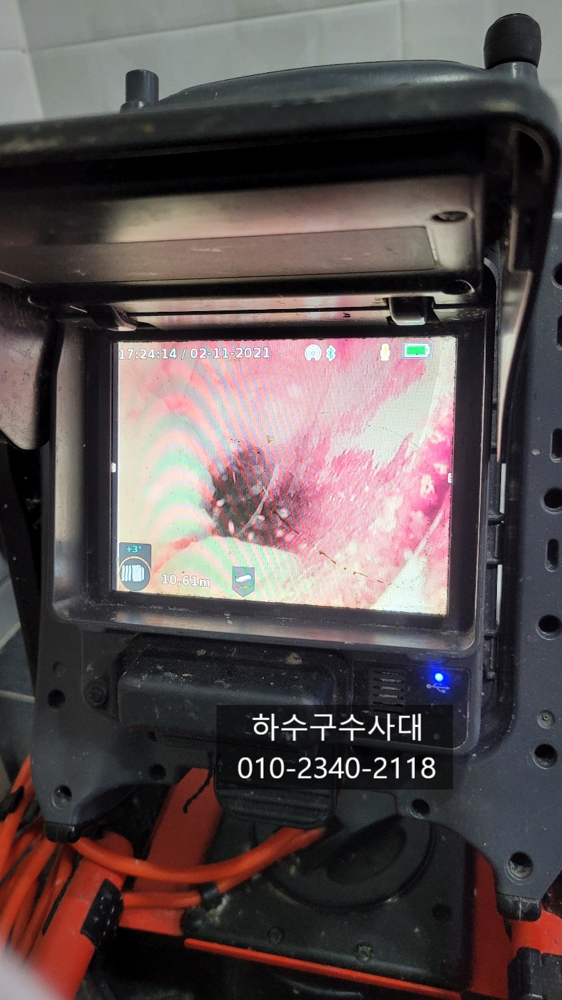

🏠 화성시하수구막힘 향남 남양 정남 하수구업체
화성 향남 변기막힘 전문 시공 후기

📋 작업 개요
- 위치: 화성 향남, 향남, 화성
- 서비스 유형: 변기막힘, 하수구막힘, 배관막힘, 뚫는업체, 고압세척
- 작업 일시: 2021. 11. 4. 21:48
- 업체명: 하수구수사대 (010-5615-2118)
🔍 문제 상황
화성시하수구막힘 향남 남양 정남 하수구업체
안녕하세요
오늘은 변기물이 천천히 내려가고
물이 시원하게 빠지지 않아서 근본적인
해결을 하기위해 저희 하수구수사대에
연락을 주셨습니다.
변기막힘 증상은 여러가지가 있는데요
예를들어 물이 조금씩 빠지다가 거의
다빠질때쯤 꿀렁꿀렁 되거나
물이 전혀 내려가지 않고 물을 내리면
변기밖으로 넘치거나 소변볼때는
잘내려가지만 대변이나 휴지를 넣으면
막히는 증상 등등 다양한 증상이 있습니다.
중요한건 원인을 정확하게 파악하는 건데요
간혹 변기가 오래되서 변기를
갈아야 한다는 분도 계시는데
배관문제라면 변기를 새걸로 바꿔도
증상은 마찬가지로 나타나게 되니
판단을 잘해야합니다.
도착해서 변기물을 내려보니 물이차올랐다가
천천히 빠지는 증상이였습니다.

🔎 원인 분석
💡 전문가 진단: 하수구수사대010-2340-2118
우선 내시경카메라를 통해 변기내부에서
막혔는지 촬영을 해보았는데요
변기내부에는 깨끗하고 배관에 물이 차있는것을
확인하였습니다.
이런경우 물이 조금씩은 빠지고 있지만 배관에
물이 고여있어 많은양의 물은 더더욱 배출되지
않기 때문에 물이 천천히 빠지는 증상을 보이게 됩니다.
변기를 탈거하고 뚫는 작업을 진행하기로 했는데요
뜯고 배관을 보니 물이 고여있고 옆집 배관과
만나 같이 나가게 연결이 되어있었습니다.
화성시하수구막힘 향남 남양 정남 하수구업체
내시경카메라를 통해 확인해보니 무언가가
막혀있는것을 확인되어 뚫는 작업을 선행작업을 진행
하기로 하였습니다.
뚫는 장비는 여러가지가 있는데요
스프링,플렉스샤프트,고압세척 등 작업자마다
선호하는 장비가 틀려 정해져 있지는 않습니다.
다만 막혀있는 것이 무언인가에 따라 달라질수도
있겠는데요 빠른 판단으로 장비를 교체 해주는것도
중요합니다^^
하수구수사대
010-2340-2118

🔧 작업 과정
플렉스샤프트로 통수작업을 진행하여
먼저 통수를 시켜주는 작업을 하였습니다.
음식점과 연결이 되어 있어 음식물 슬러지가 있을수도
있고 또다른 이물질이 있을수도 있는데요
통수가 되면 내시경카메라를 통해 확인해 봐야합니다!
물이 나간다고 해서 완벽하게 뚫린것이라고
판단할수도 있는데요 배관에 구멍만 내고 이물질이
남아 있다면 얼마가지 않아 또 막힐 확률이 높아요.
우선 통수작업을 통해 나오는 배관을 확인할수
있는데요 왼쪽배관에서 많은 양의 오물이
밀려 나오는것을 확인하였습니다.
물이 흘러나오면서 물에 잘 녹지않는 키친타올이 많이
내려왔는데요 내시경카메라를 통해 배관을 촬영해보니
일정구간에 키친타올이 뭉쳐있고 장비가 일부분만
구멍을 내어 통수가 되었습니다.
저런상태라면 또 막힐수 있기때문에 모두
제거해주는 작업을 해주는것이 좋겠죠?^^
장비를 키친타올이 뭉쳐있는 곳까지 밀어넣어
제거하는 작업을 진행합니다.
변기막힘의 원인은 대부분 한번에 막히기 보다는
이물질이 점차 쌓여 막히게 되는경우가 많은데
간혹 하수와 오수를 엮어놓아 기름기때문에
막히는 경우도 있습니다.
이곳은 식당과 엮여있지만 다행히 음식물슬러지는
보이지 않았습니다^^
뒤쪽에서도 같은 작업을 반복하여 깨끗하게
제거해 주는것이 중요합니다^^
오늘 방문한곳은 인력사무실이였는데
아마 공중화장실처럼 많은 사람들이 사용하다보니
관리가 쉽지는 않았을것이라고 생각이 되어져요.
이물질이 뭉쳐있던 부분을 완벽하게
제거하고 물이 시원하게 배수되니 기분이
좋습니다^^
이제 변기를 다시 원위치 시키는 작업을


✅ 작업 완료
해주고 물을 내려보았습니다.
물이 시원하게 내려갑니다^^
이처럼 원인을 정확하게 판단하고
해결을 하는것이 중요해요.
특히나 뚫어도 뚫어도 반복적으로
막히는 하수구는 더더욱 그렇습니다.
저희 하수구수사대는
서울,경기,인천 전지역에서 활동중입니다.
언제든지 출동가능하니 연락주세요^^




⚠️ 하수구 배관 막힘 예방 및 관리 가이드
- ✅ 머리카락, 비닐, 물티슈 등 물에 분해되지 않는 이물질은 하수구 유입을 절대 금지해 주세요.
- ✅ 하수구 거름망을 씌우고 모여진 이물질은 주기적으로 쓰레기통에 바로 비워주셔야 합니다.
- ✅ 배관 노후가 심할 경우 이물질이 더 쉽게 걸리므로 주기적인 배관 세척(고압세척 등)을 권장합니다.
- ✅ 작업 후 1년 이내 재발 시 하수구수사대에서 무상 A/S 보증 서비스를 제공합니다.
💡 핵심 정리
- 확실한 장비 작업(내시경 점검 및 샤프트 스케일링)으로 원인을 뿌리 뽑습니다.
- 작업 후 1년 이내에 동일한 부위 재발 시 100% 무상 A/S 서비스를 보장합니다.
- 서울 · 경기 · 인천 전 지역에 24시간 언제든 긴급 출동할 수 있도록 항시 대기 중입니다.
❓ 자주 묻는 질문 (FAQ)
🚨 화성 향남 변기막힘 문제로 고민이신가요?
정확한 원인 진단과 확실한 시공으로 재발 없는 해결을 약속드립니다.
24시간 긴급 출동 | 서울 · 경기 · 인천 전지역 | 1년 내 재발 시 무상 A/S